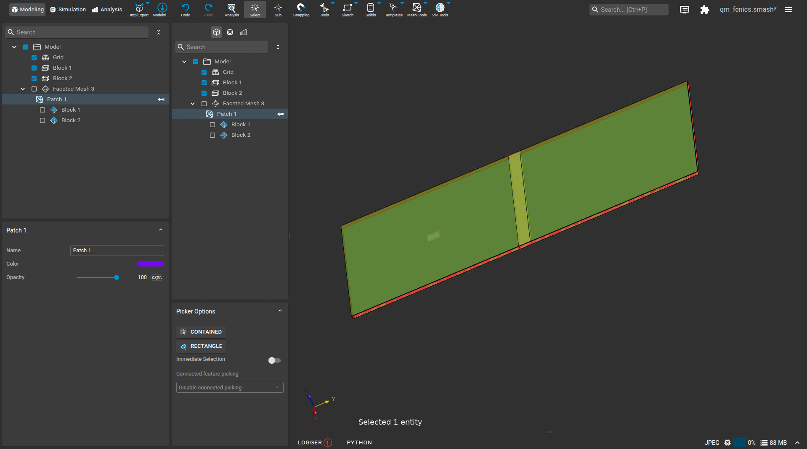
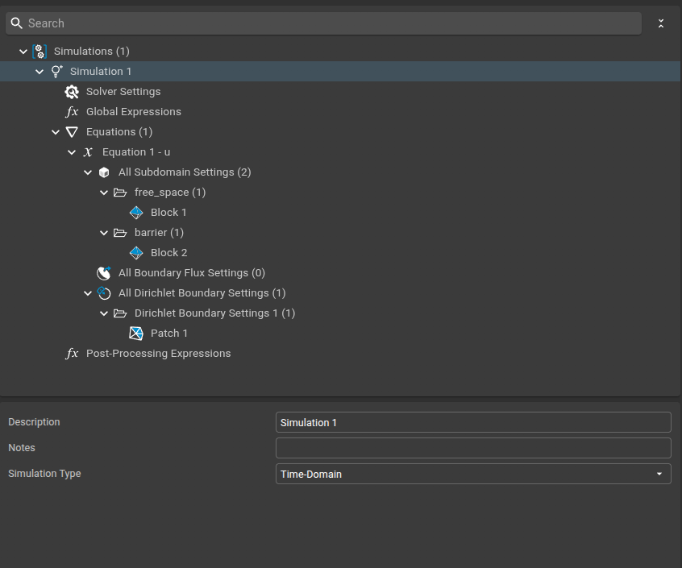
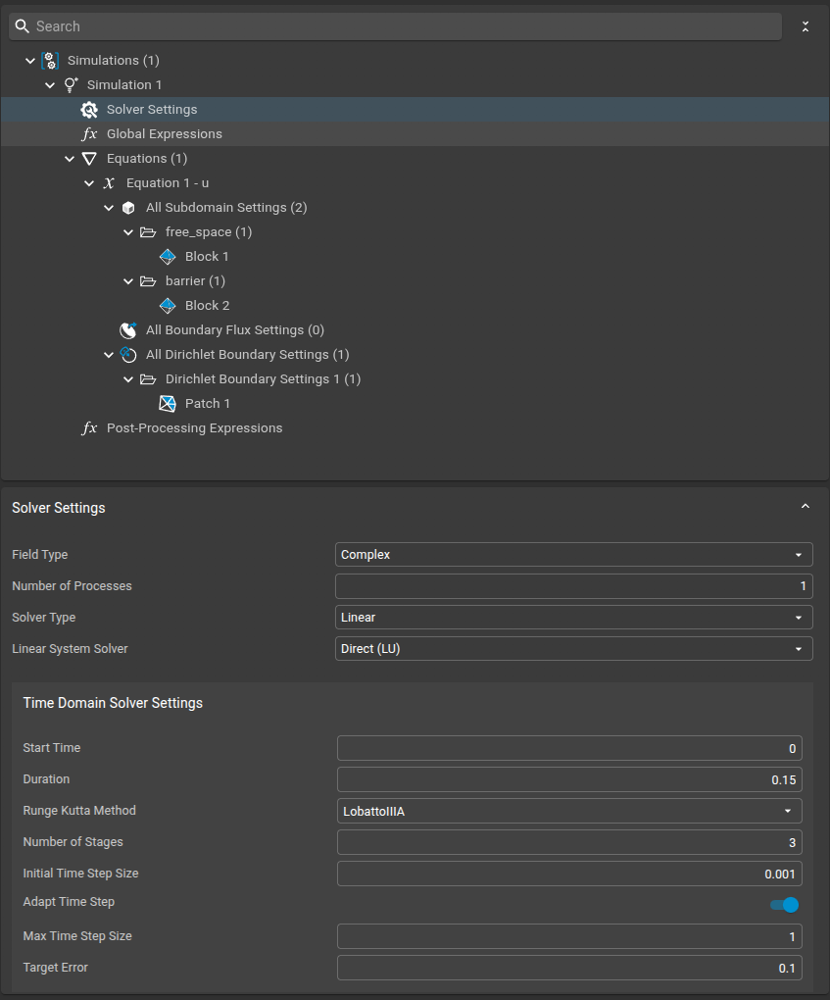
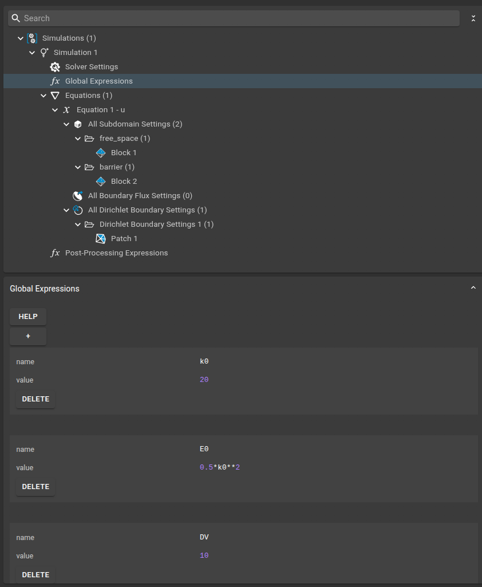
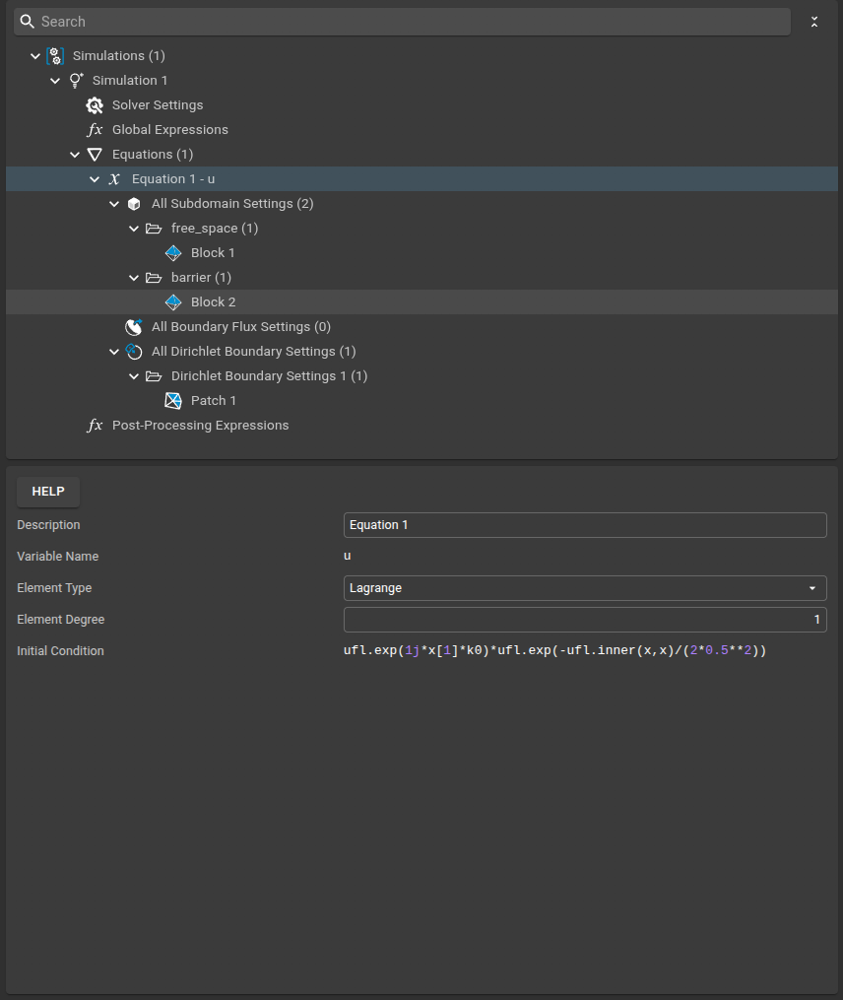
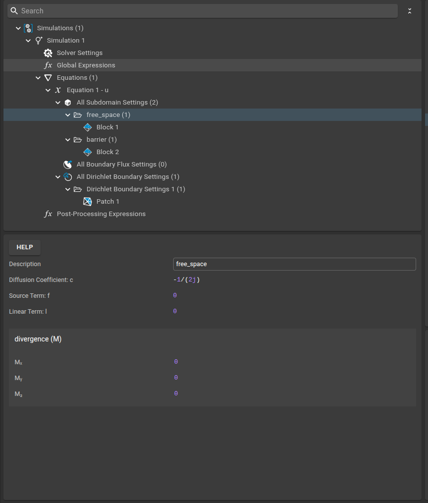
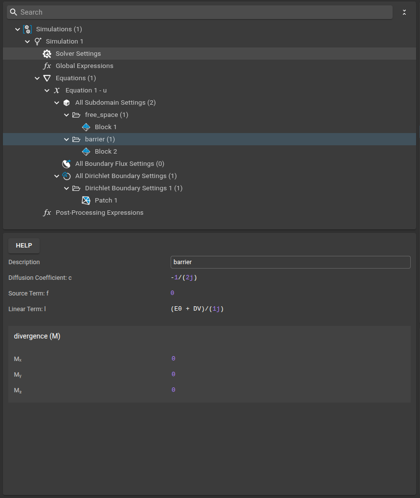
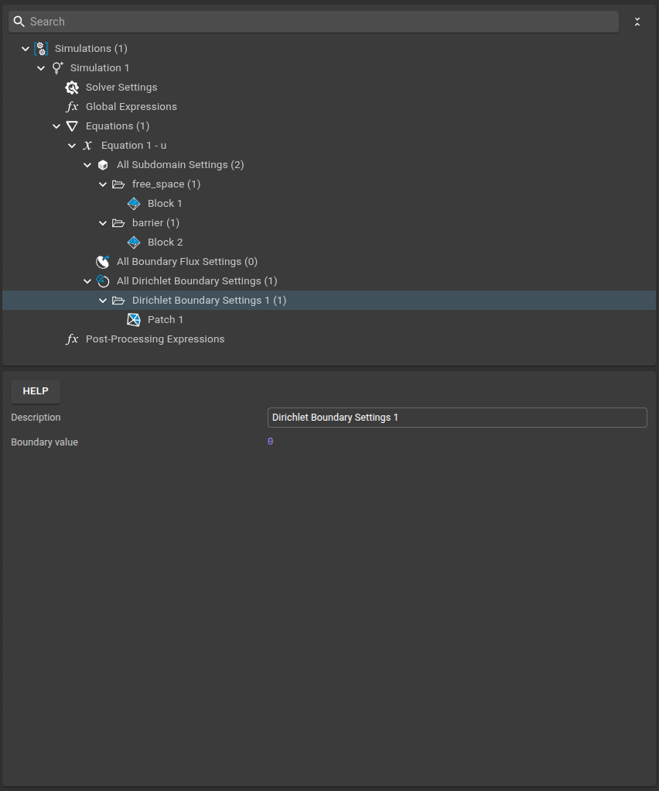

Quantum Tunneling¶
This example can be loaded directly into Sim4Life by uploading the provided .smash and .sims files from the files subfolder. To do this, use the burger menu in the Sim4Life user interface and select the .smash file to load the complete example setup.
This example demonstrates how to simulate quantum tunneling using the FEniCS plugin in Sim4Life. The setup models a Gaussian wave packet incident on a potential barrier, illustrating the fundamental quantum phenomenon of tunneling.
Physics Background¶
Quantum tunneling is a phenomenon where a quantum particle can pass through a potential barrier even if its energy is less than the barrier height. This is governed by the time-dependent Schrödinger equation:
where \(u(x, t)\) is the wave function and \(V(x)\) is the potential (nonzero in the barrier region).
Model Setup¶
The computational domain is modeled as a rectangle, subdivided into two main regions: a central barrier and surrounding free space. This allows us to represent a potential barrier in the middle of the domain, with free propagation regions on either side. The mesh and subdomain assignments are shown below:

Simulation Setup¶
1. Simulation Settings¶
We use the Time-Domain as the simulation type for this example.

2. Solver Settings¶
- Field Type: Complex
- Solver Type: Linear (Direct LU)
- Time Domain Solver:
- Method: LobattoIIIA (Runge-Kutta)
- Stages: 3
- Initial Time Step: 0.001
- Max Time Step: 1
- Duration: 0.15

3. Global Expressions¶
Global expressions define the physical parameters used in the simulation:
- k0 = 20 (wavenumber of the initial wave packet)
- E0 = 0.5*k0**2 (energy of the wave packet)
- DV = 10 (potential barrier height)

4. Equation¶
The time-dependent Schrödinger equation is solved for the wave function \(u\).
- Initial Condition:
python ufl.exp(1j*x[1]*k0)*ufl.exp(-ufl.inner(x,x)/(2*0.5**2))This represents a Gaussian wave packet with wavenumberk0.

5. Free Space¶
- Diffusion Coefficient:
-1/(2j)(kinetic term) - Linear Term:
0(no potential in free space)

6. Barrier¶
- Diffusion Coefficient:
-1/(2j)(kinetic term) - Linear Term:
(E0 + DV)/(1j)(potential energy in the barrier)

7. Dirichlet Boundary Conditions¶
A Dirichlet boundary condition is applied:
- Boundary Value: 0 (the wave function is set to zero on the specified boundary)

How the Physics is Mapped¶
- The diffusion coefficient \(-1/(2j)\) implements the kinetic term \(-\frac{1}{2} \nabla^2 u\).
- The linear term in the barrier region adds the potential energy.
- The weak form is constructed automatically by the plugin, following the variational principle.
Running the Simulation¶
- Set up the geometry and physics as shown above.
- Configure the solver and boundary conditions.
- Run the simulation in time-domain mode.
The solver output will show progress through time steps and confirm successful completion.
Results¶
The simulation produces the time evolution of the wave function, showing both reflection and tunneling through the barrier.

The results can be interactively inspected and visualized using the built-in viewers in Sim4Life, allowing you to explore the wave function dynamics over time.